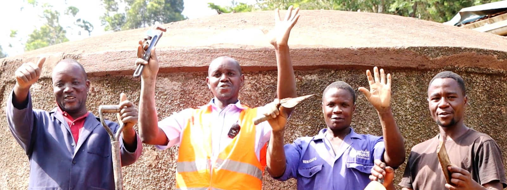
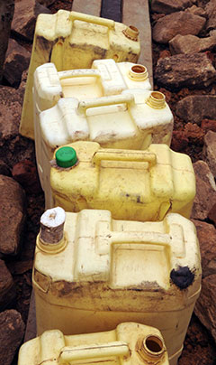

We equip, train and fund local NGOs (Non-Governmental Organizations) with an established in-country
presence who can help provide reliable access to clean water and ensure its maintenance over time.
Tools and technology allow our small teams to do far more than they could otherwise. But, these tools never get
in the way of relationship and respect.
With partners and teams around the
world, we're able to spread learning and best practices quickly. All of us can then work together toward lasting solutions.
We come alongside every partner and help them develop programs that meet the needs of their neighbors. We listen first, and offer what we know with humility.
People - not hardware - are at the center of everything we do. Your giving meets the
tangible needs of families and creates local jobs, all while respecting those we serve.
We work hard to make sure that a community's needs are always considered first. Local experts in the
field help ensure that happens. With your support, we are able to provide support and expertise for
various water solutions.
We listen for our local teams's lead in choosing the right type of water project for a particular community
or school. Far too often, "default" technologies like a handpump are being installed because of misguided
assumptions, only to end up rejected or abandoned by a community.
We've also learned that a water project must be reliable, convenient and safe and that requires careful
consideration alongside each community.
We believe deeply in end-to-end transparency and accountability. That means not only showing every outcome, but also being honest about every cost.
